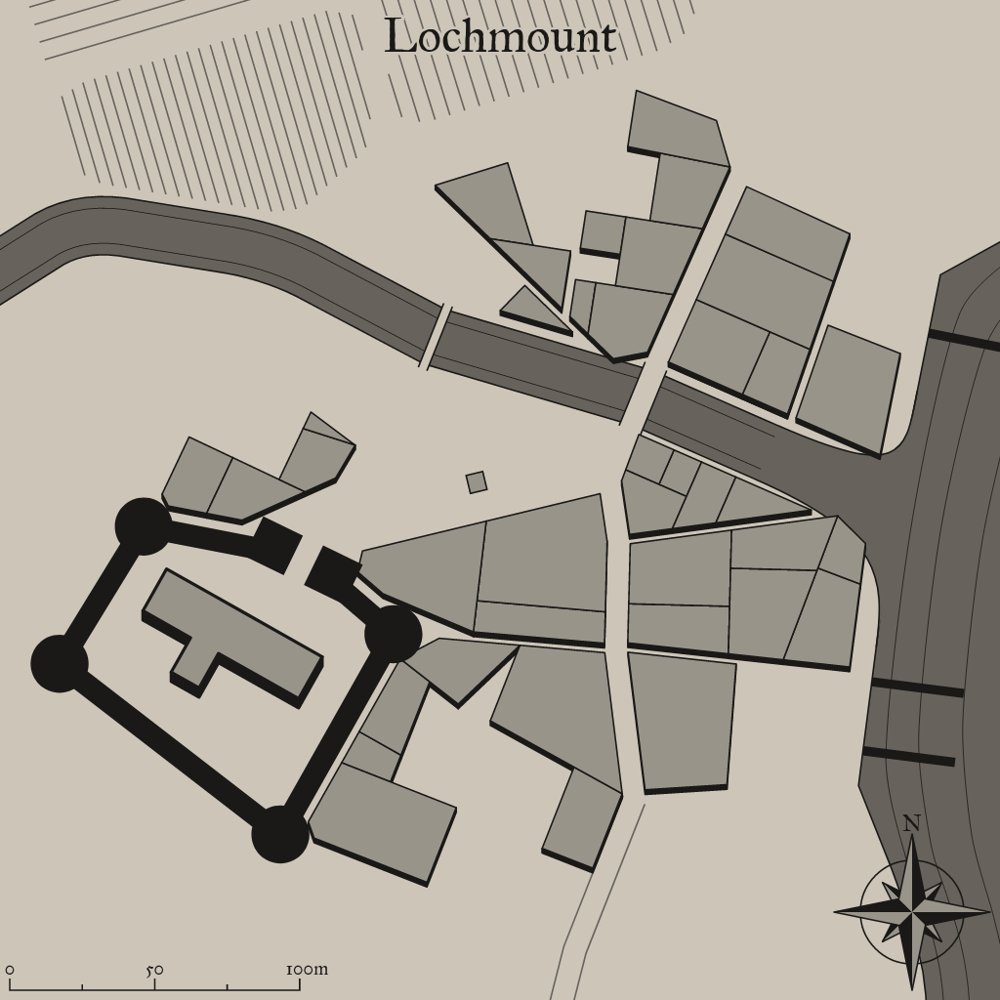

Lochmount
A mystical settlement in a fantastical world

Background Flavor
Halfhaven is entirely populated by the mixing of various races...half-orc, half-elf, half-halfling-dwarf, half-orc-elf-halfing-goblin all exist here. The town was formed to protect those who are shunned from so-called 'pure' societies. Be warned, this town is full of wild magic and any sort of speech about one race being better is dealt with swiftly and harshly.
1
Settlement Features
Lochmount is a small town 201-2,000 located in the flat lands region of the areas greater grassland. The settlement seems to be matured. Lochmount and the local surroundings are under the control of distant colonists.
Demographics
- Name: Lochmount
- Size: Small Town 201-2,000
- Real population: 394
- Population Density: Adequate
- Wealth: Adequate
- Number by race: Human 40%, Dwarf 10%, Elf 10%, Gnome 10%, Halfling 10%, Half-elf 15%, Half-orc 5%,
- Wealth: Wealthy
- Age: 3
- Alignment: Lawful Evil
- Government Type: Distant Colonists - The settlement’s ruler is a figure-head for a distant colonial power: a magistrate, governor, or minor landed noble. He or she may have limited autonomy in running the colony, but ultimately answers to the colony’s founding power. Colonies are typically seen as resources for their founding government, not having much political power or influence. The colony’s government is more concerned with making sure trade with and taxes paid to the homeland flow efficiently then the welfare of the colony’s inhabitants.
- Settlement Trait: Cultured
- Number Of Wards: 9
- Number of Districts: 3
Industry and Economy
- Primary Raw Materials: Fishing
- Shops of Note: Investigator, Stable, Carpentry: General.
- Number Of Inns/Taverns: 2
- Inns/Taverns of Note: Moody Horseman Inn, The Minotaur Tavern.
Districts
Pleecerd Vale
Trade: Stall, trader’s row, market, auction house, fish market, guild-house, merchant’s guild, grand bazaar.
Lower East Gald
Military: Barracks, parade grounds, archery range, tower, armory, keep, castle, citadel.
Upper Skugailt
Hazardous: Old well, abandoned mine, crumbling ruins of the old town, sinkhole, blood forest, scree slope, buried canton, magma pit.
Taverns / Inns
Moody Horseman Inn
Location
Lower East Gald
Description
You did hear rumors about this tavern, supposedly it's infamous for something, but for the life of you you can't remember what for. Though juding by the dirt and unhygienic circumstances, it's probably food poisoning.
Innkeeper
Bob
Menu
- Chicken Liver Pate and Bread (3 sp)
- Roasted Cabbage, Mug of Stout (4 cp)
- Apple Stuffed Mushrooms (8 cp)
- Stewed Mutton and Whey Cheese, Tankard of Perry (8 cp)
- Stewed Lentils, Mug of Cider (3 cp)
The Minotaur Tavern
Location
Lower East Gald
Description
From the outside it looks uninviting, dull and uncomfortable. Timber and well-crafted wooden beams make up most of the building's outer structure.
Innkeeper
Bob
Menu
- Apple Stuffed Mushrooms (8 cp)
- Pottage, Mug of Perry (4 cp)
- Chicken Liver Pate and Bread (3 sp)
- Mixed grill, Collard greens, Chick peas, Rice, Plum pudding (2 gp).
- Stewed Lentils, Mug of Cider (3 cp)
2